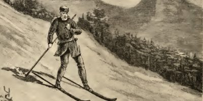

Figure 1: Songhua Lake Ski Resort(photo taken by Yingjia Yu)
HISTORY
The earliest skis date back to 8000 BC, with wood and horesehair skis found in Russia and northern China,
while many broken skis have been found in Norway, Sweden and Finland.
The first written record of skiing was found in China, probably from 206 BC to 220 AD, and it was a record of a primitive skis called MuMa.
At that time, people used skiing as a survival tool for hunting and waging war.
By the 19th century, skiing had become a popular sport,
and the design of skis had developed during this period,
from the Telemark Ski with a side cut design to the steel edge ski with better grip,
which also promoted to the skiing techniques, at that time stem turn and parallel turn were invented.
By the 1930s, skiing became popular in Europe, North America, Japan, Australia, Chile, and Argentina.
In 1924, the first Winter Olympics were held in Chamonix, France.
That same year, a big change came with the invention of the ski chair.
In 1936, the first ski chair was installed in Sun Valley, Idaho, people do not need to climb a hill thus affecting the skiing experience.
Because they no longer have to climb to the top of the hill.
In the mid-1990s, the first twin-tip skis were invented, and because skiing became more and more popular sport around the world,
ski resorts also were built more and more, until now, skiing is becoming an increasingly popular sport(Mabey ski, 2025).

Figure 2: History of Skiing (photo taken by Altitude)
Goals: Learn the intermediate techniques of speed and direction control,
you can glide smoothly on different slopes of pistes, such as all of green and blue pistes and basic black pistes.
Figure 4: A skier was skiing (photo taken by UVEX sports)Click here to go to the detailed guide page
Goals: Learn the advanced techniques of speed and direction control,
you can glide smoothly on all of green pistes, blue pistes and black pistes.
Figure 5: A skier was skiing (photo taken by SAZsport)Click here to go to the detailed guide page
COMPETITIONS
Now, skiing is not only a sport for all people, but also one of the most important sporting competitions in the world. The Winter Olympics and Paralympics, which are held every four years, includes almost all of the major skiing events, as well as the FIS world cup, where skiers attend it all year round, and the Winter universiade for university students. Within these competitions, there are many types of skiing, such as alpine skiing, cross-country skiing, ski jumping, freestyle skiing, biathlon, Nordic combined and ski mountaineering.
Figure 6: Winter Olympics (photo taken by Soundcloud)
Alpine skiing
A mostly speed competition, uses the format of a time trial, which requires skiers using the fastest speed downhill from the top of the mountain.
Ski mountaineering
It will become an official sport at the next Winter Olympics in Milan, athlete should climb to the top of the mountain and then slide down, which ranked by time of arrival.
Ski jumping
It requires the athlete to slide down the ramp, then jump and land as far as possible at the bottom of the jump, not only does the sport require the athlete to fly as far as possible, but it also requires the athlete to have a more stable posture and better movements.
Cross-country skiing
It originated in northern Europe, people used skiing to hunt. After that, cross-country skiing gradually developed into a sport. The distance of the competition can be short, team or up to 50 kilometers, and the skiers need to use the least time to reach the finish line.
Freestyle skiing
It includes of aerials and moguls. The aerials compete against the tricks of the athletes, meanwhile, moguls compete not only against the difficulty of the tricks, and air jumps, but also against the speed of the skiers, who need to cross a bumpy and steep courses(usually called Mogul) and complete two jumps in the air.
Biathlon
A combination of cross-country skiing and the rifle shooting, requires athletes to compete on the piste and shoot the targets at designated shooting ranges. Although the final competition is speed, there are penalties for missing the target, such as penalty time or increased skiing distance, so shooting accuracy is also important.
Nordic combined
It combines cross-country skiing and ski jumping, the distance and style of ski jumping determines its score, and then according to the score of ski jumping determines the starting order of cross-country skiing competition, every 15 points need to start one minute late, and finally, the athlete should use the least time to reach the finish line.
If you need to know more information about ski competitions, skiers, skiing resort analysis, skiing technical analysis, etc., there are several common ski websites available.
Fis: official website, with the world's most comprehensive ski competition and skier information, rankings, regulations and news.click here
SnowBrains: focuses on all kinds of ski news, such as new ski resort trends, political trends in skiing and so on.click here
Powder: Another ski news website, including ski resort reviews and ski gear reviews.click here
Skiracing: a news site about skiers and ski instructors, as well as information about ski school and ski teaching courses, such as winter camps.click here